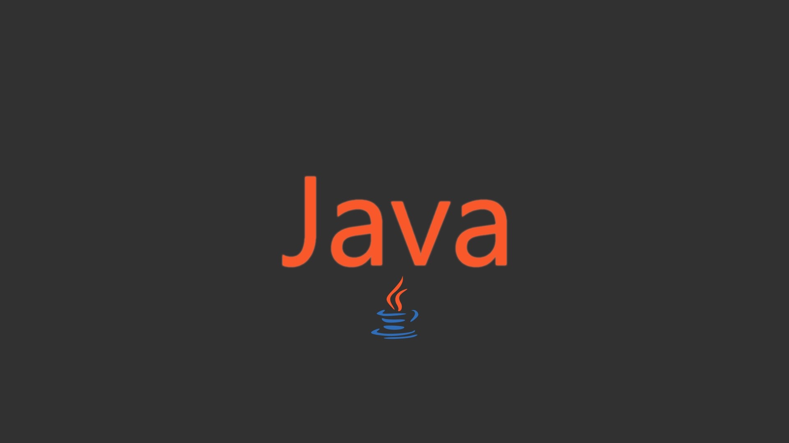
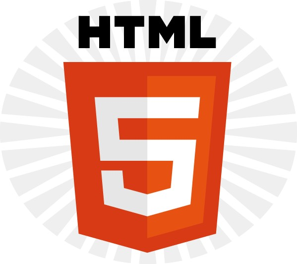
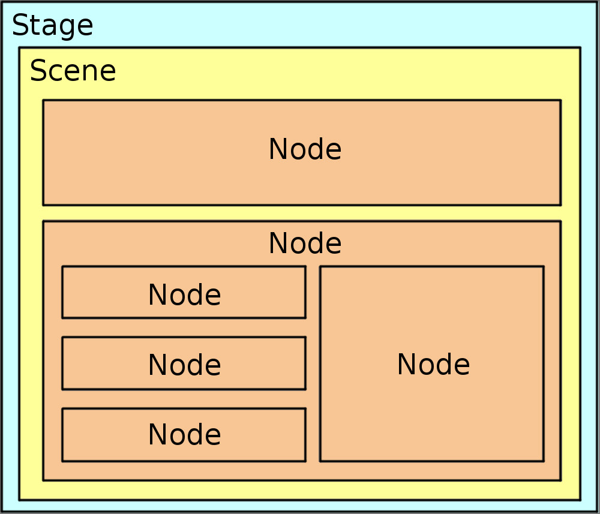

Java
Jag har testat mig på många olika programmeringsspråk som exempelvis python och C# men har
främst fokuserat på Java och tycker det är det roligaste språket hittils (kanske för att
det är det jag fokuserat på mest och förstår). Jag har gjort många olika projekt genom åren,
stora som små. Jag har gjort mindre kalkylatorer och textbaserade spel och större program inom
exempelvis pathfinding och hundregister.

Databas
Databashantering är ett ämne jag tycker är lite klurigt och helt ärligt ingen favorit.
Har gått samma kurs på SU och tog den igen nu på STI och har fått en betydligt djupare
förståelse kring ämnet. Exempelvis hur en databas hänger ihop med utvecklarprogram samt
hur man bör designa sin databas på ett effektivt sätt samt flera sql kommandon.
Webbutveckling
Webbutveckling är ett av mina favorit ämnen inom systemutveckling. Jag har alltid
haft svårt att veta vad jag vill jobba med i framtiden men webbutveckling är ett av de
ämnen jag kan tänka mig att jobba med (det eller javautvecklare). Jag har inte hållit
på super mycket med webb men har gjort en hel del hemsidor med css och javaScript och har
bra grundliga kunskaper och tycker det är väldigt kul! Även om css kan vara lite snurrigt ibland.

UX/UI
UX och UI design är något jag jobbade mycket med på stockholms universitet när jag skapade mycket
spel. Även i andra kurser var det stort fokus på användarvänlighet i alla system vi skapade.
Jag tycker även detta ämne är väldigt kul då det involverar både design och programmering.
Exempelvis
i spelen vi skapade var det viktigt att visa spelare hur man lär sig spela spelet i början med
intron
och dylikt samt att alla användarmenyer har semantiska ikoner och texter.
JavaFX
JavaFX var en stor del under programmering 2 kursen på SU och det tyckte jag var kul för att det
liknar webbdesign på ett sätt och även UX och användarvänlighet. Exempelvis gorde vi projekt där
vi skulle implementera en bankautomat med rätt knappar och folders och liknande. Det är en rätt så
liten del inom systemutveckling men av någon anledning tyckte jag det var så pass kul att jag tyckte
det var värt att upp här!
